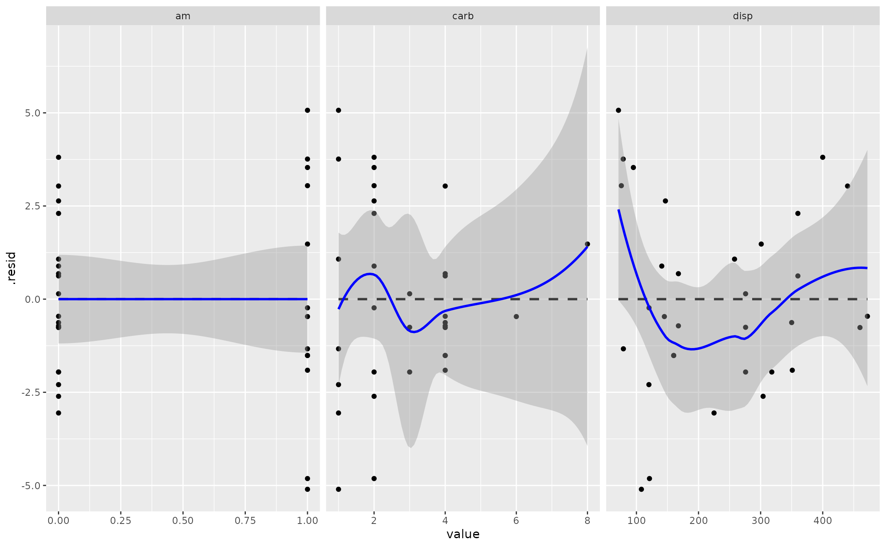

R/linloess_plot.R
linloess_plot.Rdlinloess_plot() provides a visual diagnostic of the linearity assumption of the OLS model.
Provided an OLS model fit by lm() in base R, the function extracts the model frame and creates a faceted
scatterplot. For each facet, a linear smoother and LOESS smoother are estimated over the points. Users who run
this function can assess just how much the linear smoother and LOESS smoother diverge. The more they diverge, the
more the user can determine how much the OLS model is a good fit as specified. The plot will also point to potential
outliers that may need further consideration.
linloess_plot(mod)
| mod | a fitted OLS model |
|---|
linloess_plot() returns a faceted scatterplot as a ggplot2 object. You can add cosmetic features
to it after the fact.
This function makes an implicit assumption that there is no variable in the regression formula with the name ".y".
Steven V. Miller
#>#>#> Warning: pseudoinverse used at -0.005#> Warning: neighborhood radius 1.005#> Warning: reciprocal condition number 0#> Warning: There are other near singularities as well. 1.01#> Warning: pseudoinverse used at -0.005#> Warning: neighborhood radius 1.005#> Warning: reciprocal condition number 0#> Warning: There are other near singularities as well. 1.01#> Warning: pseudoinverse used at 4#> Warning: neighborhood radius 2#> Warning: reciprocal condition number 1.8444e-16#> Warning: pseudoinverse used at 4#> Warning: neighborhood radius 2#> Warning: reciprocal condition number 1.8444e-16#> Warning: pseudoinverse used at 3.98#> Warning: neighborhood radius 4.02#> Warning: reciprocal condition number 2.0055e-16#> Warning: There are other near singularities as well. 16.16#> Warning: pseudoinverse used at 3.98#> Warning: neighborhood radius 4.02#> Warning: reciprocal condition number 2.0055e-16#> Warning: There are other near singularities as well. 16.16#> Warning: pseudoinverse used at 2.99#> Warning: neighborhood radius 1.01#> Warning: reciprocal condition number 0#> Warning: There are other near singularities as well. 4.0401#> Warning: pseudoinverse used at 2.99#> Warning: neighborhood radius 1.01#> Warning: reciprocal condition number 0#> Warning: There are other near singularities as well. 4.0401#> Warning: pseudoinverse used at -0.005#> Warning: neighborhood radius 1.005#> Warning: reciprocal condition number 0#> Warning: There are other near singularities as well. 1.01#> Warning: pseudoinverse used at -0.005#> Warning: neighborhood radius 1.005#> Warning: reciprocal condition number 0#> Warning: There are other near singularities as well. 1.01